材料
※粉量を変えると自動計算されます
生地
型
作り方
生地
STEP 1
ぬるま湯に砂糖、イーストを加え混ぜる
ぬるま湯に砂糖とイーストを加え、よく混ぜ合わせます。今回は捏ねずに作るため、最初にイーストをぬるま湯になじませておきます。
ぬるま湯に砂糖とイーストを加え、よく混ぜ合わせます。今回は捏ねずに作るため、最初にイーストをぬるま湯になじませておきます。
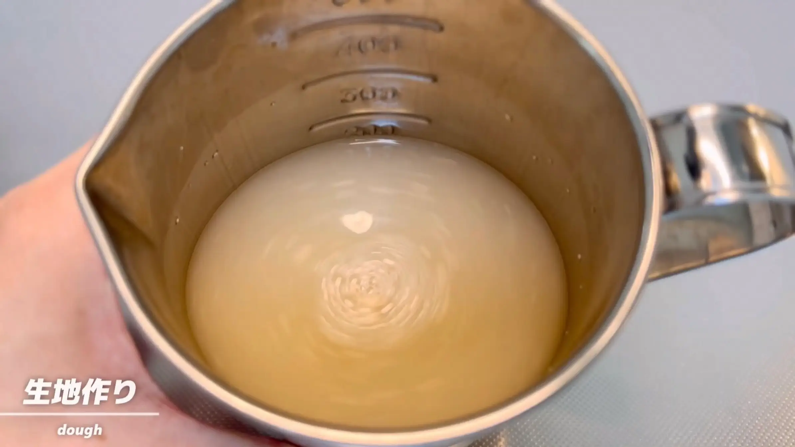
STEP 2
強力粉、塩、イースト液を加えて混ぜる（[動画 01:58]）
強力粉と塩を混ぜ合わせ、イースト液を加えてヘラで混ぜます。ここでは捏ねず、粉気がなくなり、生地がひとまとまりになればOKです。
強力粉と塩を混ぜ合わせ、イースト液を加えてヘラで混ぜます。ここでは捏ねず、粉気がなくなり、生地がひとまとまりになればOKです。
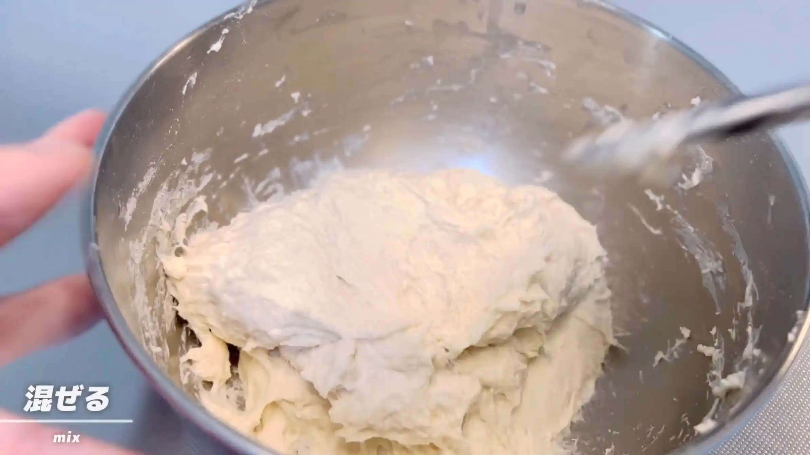
STEP 3
米油を加え、ヘラで混ぜる（[動画 02:31]）
米油を加え、ヘラで生地になじむまで混ぜ合わせます。米油が生地全体になじみ、油が見えなくなればOKです。
米油を加え、ヘラで生地になじむまで混ぜ合わせます。米油が生地全体になじみ、油が見えなくなればOKです。
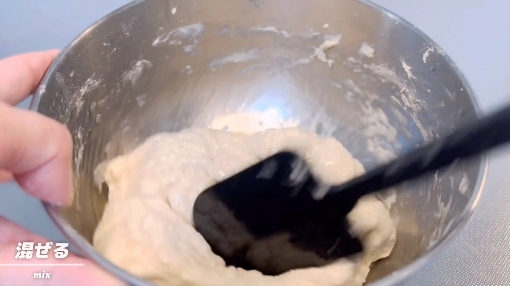
STEP 4
室温で40分おく
乾燥しないようにラップをして、生地を休ませます。ここでは捏ねる代わりに生地を休ませることで、次の折りたたみで扱いやすい状態にしていきます。
乾燥しないようにラップをして、生地を休ませます。ここでは捏ねる代わりに生地を休ませることで、次の折りたたみで扱いやすい状態にしていきます。
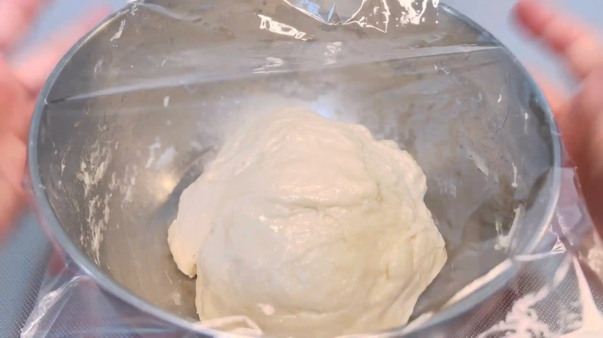
STEP 5
手を水で濡らし、折り畳む（[動画 03:25]）
手を水で濡らしておくと、ベタつく生地を扱いやすくなります。生地を四方から折りたたみ、最後にひっくり返します。ひっくり返すことで、底にあった生地を表側に出しながら、生地全体を整えていきます。
手を水で濡らしておくと、ベタつく生地を扱いやすくなります。生地を四方から折りたたみ、最後にひっくり返します。ひっくり返すことで、底にあった生地を表側に出しながら、生地全体を整えていきます。
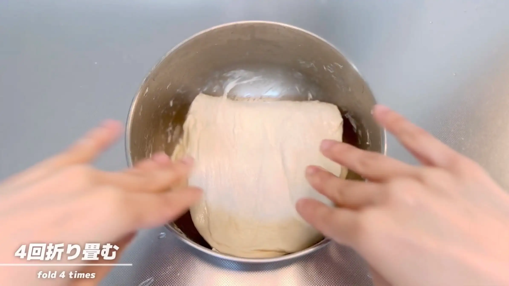
STEP 6
室温で40分おく
再びラップをして生地を休ませます。休ませることで生地がゆるみ、次の折りたたみがしやすくなります。
再びラップをして生地を休ませます。休ませることで生地がゆるみ、次の折りたたみがしやすくなります。
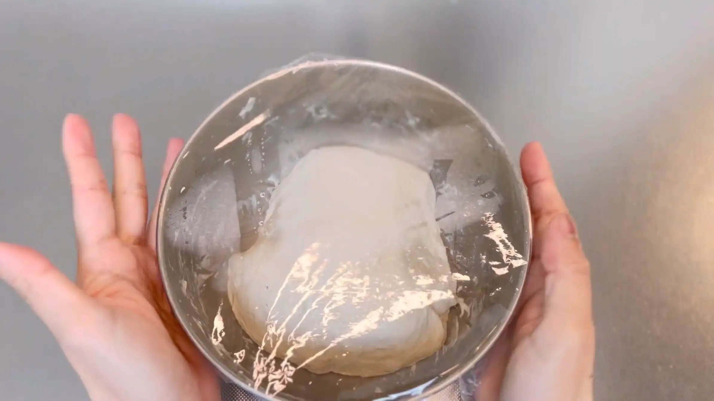
STEP 7
手を水で濡らし、折り畳む（[動画 04:32]）
前の工程と同じように、生地を四方から折りたたみ、最後にひっくり返します。折りたたみを繰り返すことで、生地が少しずつまとまりやすくなってきます。
前の工程と同じように、生地を四方から折りたたみ、最後にひっくり返します。折りたたみを繰り返すことで、生地が少しずつまとまりやすくなってきます。
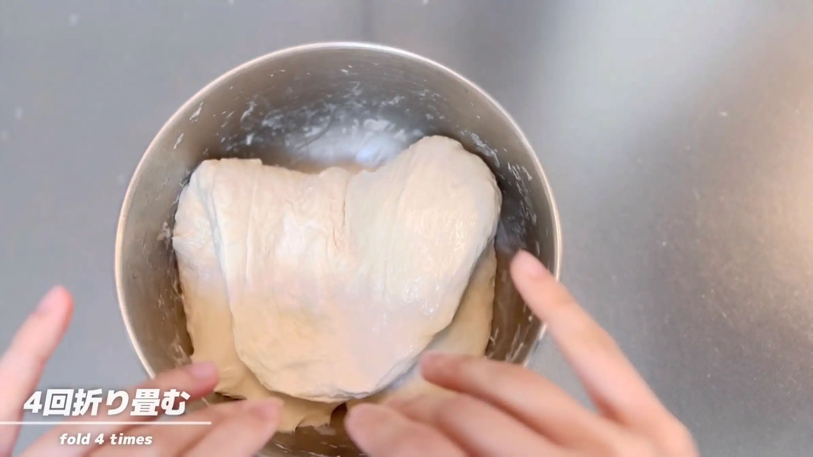
STEP 8
室温で90分おく
最後の折りたたみが終わったら、ラップをして生地をじっくり休ませます。ここでは時間だけで判断せず、生地がふっくらと膨らんでいるかを確認します。
最後の折りたたみが終わったら、ラップをして生地をじっくり休ませます。ここでは時間だけで判断せず、生地がふっくらと膨らんでいるかを確認します。
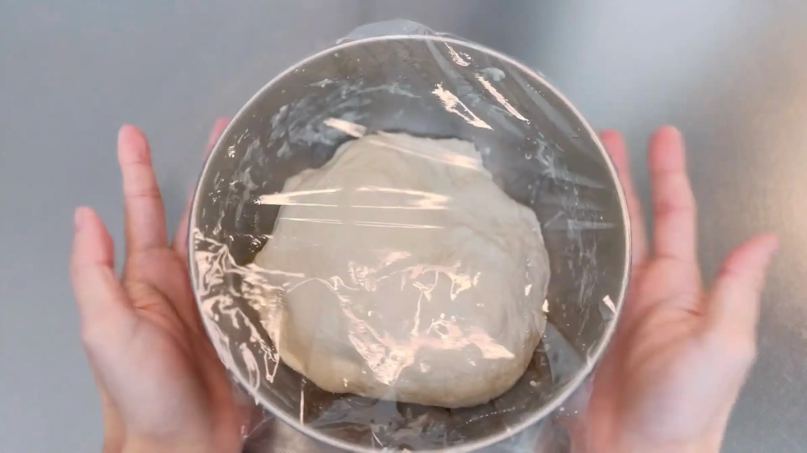
STEP 9
ボウルの中で成形する（[動画 05:32]）
生地をひっくり返し、ボウルの中で四方から折りたたんで、長方形に整えます。
生地をひっくり返し、ボウルの中で四方から折りたたんで、長方形に整えます。
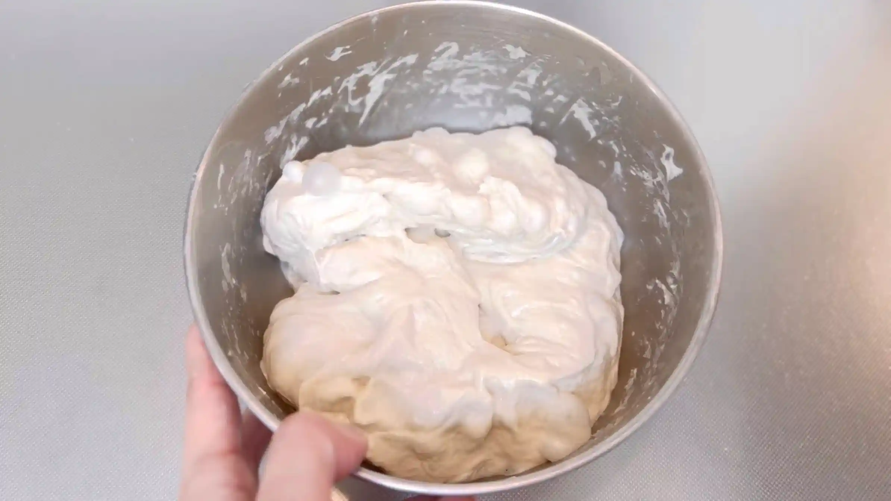
STEP 10
型に入れ、室温で60分おく
成形した生地を型に入れ、ラップをして二次発酵させます。60分を目安に、生地がふっくらと膨らんだら次の工程へ進みます。室温によって発酵時間が変わるため、生地の状態を見ながら調整してください。
成形した生地を型に入れ、ラップをして二次発酵させます。60分を目安に、生地がふっくらと膨らんだら次の工程へ進みます。室温によって発酵時間が変わるため、生地の状態を見ながら調整してください。
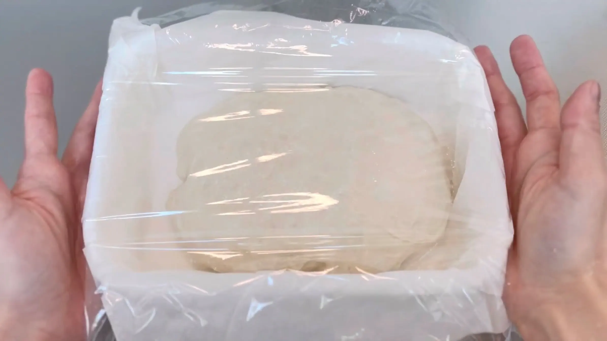
STEP 11
オーブンを210℃に予熱する
焼成前にオーブンを210℃に予熱しておきます。生地を入れる前にしっかり温度を上げておくことで、最初から設定温度で焼き始められます。
焼成前にオーブンを210℃に予熱しておきます。生地を入れる前にしっかり温度を上げておくことで、最初から設定温度で焼き始められます。
STEP 12
粉を振る
焼成前に生地の表面へ粉を薄く振ります。粉を振ることで、焼き上がったときに表面に白っぽい粉の模様がつき、素朴な雰囲気に仕上がります。
焼成前に生地の表面へ粉を薄く振ります。粉を振ることで、焼き上がったときに表面に白っぽい粉の模様がつき、素朴な雰囲気に仕上がります。
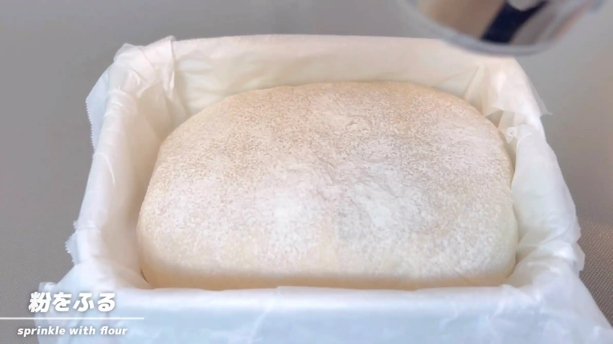
STEP 13
オーブン210℃で25分焼く
表面がきつね色になるまで焼きます。焼き時間は目安とし、焼き色を確認しながら、ご家庭のオーブンに合わせて調整してください。
表面がきつね色になるまで焼きます。焼き時間は目安とし、焼き色を確認しながら、ご家庭のオーブンに合わせて調整してください。
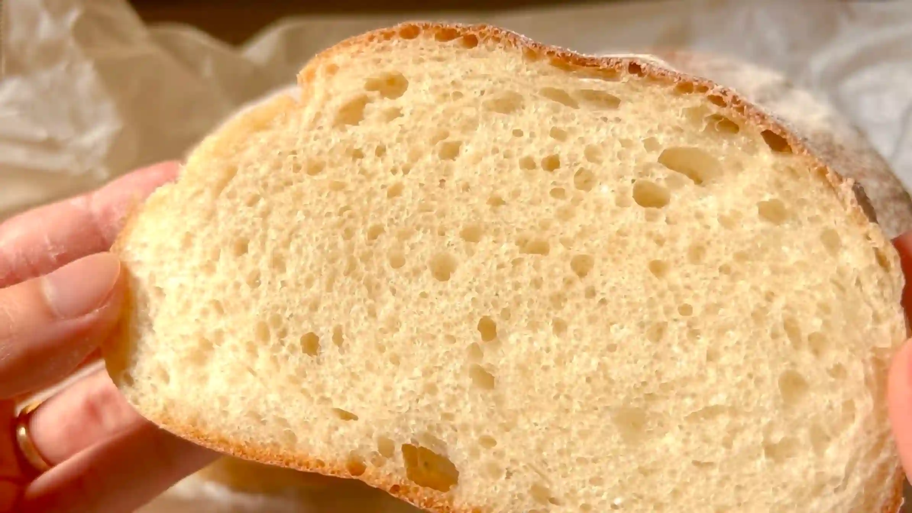
動画でチェック
おいしく作るためのワンポイントコラム
近頃バターのお値段が高くなってきて「パン作りのたびに贅沢には使えないな…」と感じることも増えました。でも、やっぱりおうちで美味しい焼きたてパンが食べたい！そこで今回は、バターの代わりにリーズナブルな米油を使い、しかも捏ねずに焼き上げる『米油パン』を作りました。安さだけでなく美味しさも追い求めた、コスパ抜群のパンに仕上げる「3つのコツ」をご紹介します。
① コストを抑える工夫
油脂はバターの代わりに価格が約半額の米油を使い、粉は手頃な強力粉に置き換えて作ります。そして案外コストのかかるドライイーストは2gに抑えることで美味しさと安さを両立します。地味な工夫に見えますが、今までなんとなく使っていた材料の量や種類を見直すだけでかなりの節約に。パンを焼く頻度が高い方にはとってもおすすめです。
② 捏ねずにふんわり仕上げるコツ
コスパも大事ですが、作りやすさもとっても重要！このレシピでは生地を4回折り畳む作業を、2回繰り返すだけでOK。ただ、捏ねない生地はゴワゴワ粗くなったり、膨らみが弱くなることもあるので、しっかりと発酵時間をとるのが美味しい生地に仕上げるコツです。ボウルの中で元の大きさの大体3倍くらいまで膨らむのを目安にじっくり待っていきます。
③ 米油のメリット
米油の最大の強みはニオイや癖が全くないこと！オリーブオイルのような主張がなくバターのような重たさもないため、素材の味を引き立てる黒子に徹してくれます。毎日食べても飽きない素朴でやさしい味わいに仕上がります。ただし、日が経ったり冷凍するとしっとり感が薄れやすいため、「すぐ食べるなら米油」「作り置きならバター」と使い分けるのもおすすめです！
米油で作るパンはクセがなくあっさりしていて、毎日のお食事パンにまさにピッタリ！バターを贅沢に使ったパンも大好きなので値上がりは少し切ないですが、工夫して安く美味しいパンを焼いていきたいですね。日々のパン作りのバリエーションとして、ぜひ試してみてください！
① コストを抑える工夫
油脂はバターの代わりに価格が約半額の米油を使い、粉は手頃な強力粉に置き換えて作ります。そして案外コストのかかるドライイーストは2gに抑えることで美味しさと安さを両立します。地味な工夫に見えますが、今までなんとなく使っていた材料の量や種類を見直すだけでかなりの節約に。パンを焼く頻度が高い方にはとってもおすすめです。
② 捏ねずにふんわり仕上げるコツ
コスパも大事ですが、作りやすさもとっても重要！このレシピでは生地を4回折り畳む作業を、2回繰り返すだけでOK。ただ、捏ねない生地はゴワゴワ粗くなったり、膨らみが弱くなることもあるので、しっかりと発酵時間をとるのが美味しい生地に仕上げるコツです。ボウルの中で元の大きさの大体3倍くらいまで膨らむのを目安にじっくり待っていきます。
③ 米油のメリット
米油の最大の強みはニオイや癖が全くないこと！オリーブオイルのような主張がなくバターのような重たさもないため、素材の味を引き立てる黒子に徹してくれます。毎日食べても飽きない素朴でやさしい味わいに仕上がります。ただし、日が経ったり冷凍するとしっとり感が薄れやすいため、「すぐ食べるなら米油」「作り置きならバター」と使い分けるのもおすすめです！
米油で作るパンはクセがなくあっさりしていて、毎日のお食事パンにまさにピッタリ！バターを贅沢に使ったパンも大好きなので値上がりは少し切ないですが、工夫して安く美味しいパンを焼いていきたいですね。日々のパン作りのバリエーションとして、ぜひ試してみてください！


バターの代わりに米油を使って焼き上げる『捏ねない米油パン』のレシピです！コスパ良く、捏ねないでお手軽に作れるおすすめパンです。コラムでは「コストを抑える工夫」「捏ねずにふんわり仕上げるコツ」「米油のメリット」の3つのポイントをご紹介します。